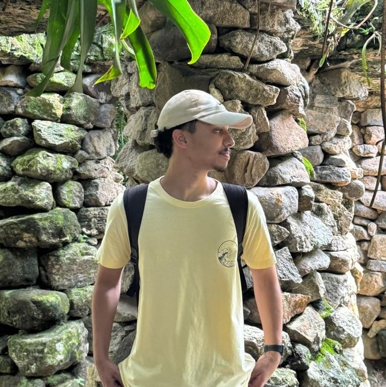

GARio de Janeiro · Brasil
Gustavo
Amaral
Formado em Técnico em Informática pelo IFRJ, atualmente cursando Engenharia da Computação. Apaixonado por programação, desenvolvimento de software e inteligência artificial — sempre em busca de aprender algo novo.
// sobre mim
Quem é Gustavo
Sou um estudante de Engenharia da Computação, formado como Técnico em Informática pelo IFRJ. Desde os primeiros contatos com programação, encontrei na tecnologia uma forma de transformar ideias em soluções reais — seja em uma linha de código, em um sistema inteiro ou em um jogo.
Tenho interesse especial em desenvolvimento de software e em inteligência artificial, e acredito que aprendizado contínuo é o que diferencia um bom desenvolvedor de um excelente desenvolvedor. Fora do código, minha fé e minha guitarra também fazem parte de quem eu sou.
Formação
Técnico em Informática (IFRJ) e graduando em Engenharia da Computação.
Experiência
Jovem Aprendiz na Dock.tech, atuando em projetos de programação e prototipação.
Tecnologias
HTML, CSS, JavaScript, Python, C#, Unity, Git e GitHub.
Objetivos
Aprofundar-me em IA e desenvolvimento de software de alto impacto.
// formação acadêmica
Trajetória de estudos
Técnico em Informática
Instituto Federal do Rio de Janeiro (IFRJ)
Engenharia da Computação
Instituto Federal do Rio de Janeiro (IFRJ)
// experiência profissional
Onde já trabalhei
Dock.tech
Jovem AprendizParticipação em projetos envolvendo programação, prototipação, desenvolvimento web e aprendizado contínuo de tecnologias modernas — passando por desenvolvimento de sistemas, jogos e iniciativas de inteligência artificial.
// habilidades técnicas
Stack & Ferramentas
Frontend
Programação
Desenvolvimento de Jogos
Versionamento
Ferramentas
Estudando
// projetos
Meus Projetos
GitHub
Repositórios e projetosTodos os meus projetos, estudos, desafios e experimentos de programação estão disponíveis no meu GitHub.
Acessar GitHub// além do código
Interesses
Tecnologia
Sempre explorando novas ferramentas e formas de criar.
Música & Guitarra
Tocar guitarra como forma de equilíbrio e criatividade.
Academia
Disciplina física que reflete na disciplina do código.
Fé Cristã
Base que sustenta valores, propósito e perseverança.
Inteligência Artificial
Estudo contínuo de IA e seu potencial para resolver problemas reais.
"Tu, porém, permanece firme naquilo que aprendeste e de que foste inteirado, sabendo de quem o aprendeste."
2 Timóteo 3:14// contato
Vamos construir algo juntos
Estou aberto a novas oportunidades, parcerias e conversas sobre tecnologia, programação e inteligência artificial. Envie uma mensagem ou me encontre nas redes abaixo.